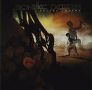

Home Artist links Label link

Sonic Debris - Velvet Thorns
| Artist: | Sonic Debris |
| Title: | Velvet Thorns |
| Label: | DVS Records DVS001 |
| Length(s): | 46 minutes |
| Year(s) of release: | 2000 |
| Month of review: | [01/2001] |
Line up
Rune Sorheim - vocals
Tommy Nilsen - guitars
Per M. Bergseth - drums
Knut Bergaust - bass
Jan P. Ringvold - keyboards
Tracks
| 1) | Kiss And Kill | 5.07
|
| 2) | Snowflake | 5.29
|
| 3) | Dead Man | 5.13
|
| 4) | Velvet Thorns | 4.48
|
| 5) | Virtual Steps | 3.16
|
| 6) | Bustale | 4.12
|
| 7) | New Horizon | 3.38
|
| 8) | New Angel | 3.27
|
| 9) | New Narrow Needle Groove | 3.44
|
| 10) | My Aching Pain | 7.19
|
Summary
Having once reviewed a demo cd of theirs, I was informed that I would really
love their album. It is also the first album to be released on the DVS label.
The music
Four of the tracks on this album are also present on the demo cd, but in
modified form. In general the songs have become a bit shorter.
Kiss And Kill opens with a record and a piano playing softly and slightly
jazzy. Late nite bar music until the music erupts into heavy organ ridden
prog with a droning guitar. The vocal parts are at first a bit tiring being
a bit too disjointed, in the strong chorus they become poppy.
The follow-up Snowflake is a bit more chaotic and noisy, but the catchy
choruses continue be a focus of attention. The rock driven music really
rips at time, but I have to admit getting too much of this too easily.
A catchy riff opens Dead Man, a song already familiar from the demo cd.
Then the music winds down for the whispered vocal parts and I'm reminded
a bit of Bono's voice here, but a problem I am having here is that the
vocalist, besides his accent, doesn't articulate well, giving me the idea
that the vocals drop out at times. The playful percussion, the sharp guitar
work and the third catchy chorus on the album compensate for this. If you
prefer to hear some references for this band than I have to say that this is
quite hard. At times I'm reminded of Pain Of Salvation/Faith No More, but that
is only at times and within the prog scene there's virtually nothing it can
be compared to. Opening with piano we come to the title track. Heavy riffs and
a generally varied approach with plenty of breaks and backing vocals in various
places gives rise to a varied song in which I hear references to Faith No More.
Virtual Steps is a short track that is more alternative rock than progressive
rock. Think Radiohead here. That is, until we come to the guitar parts which
are always heavy and an occasional fusionist excursion.
Bustale is a bit of a vague track with cosmic keyboards, acoustic guitars,
which is not to say that this is a ballad or anything. From the claustrophobic
rock you find on New Horizon ending with some psychedelic influences. The drums
drone on in New Angel, the slightly groovy music is melodically deficient
in the verses, but of course the chorus tends to make up for it. The rhythm
guitar is really driving here ending in orgastic guitar noise. The rock
continues on New Narrow Needle Groove (three times New... in a row).
Radiohead is felt again in My Aching Pain, with some added triphop leanings.
A somewhat vague track, but one which managed to convince me, ending with
some nice disjointed moody piano playing.
Conclusion
Nothing wrong with the melodies on this album. Plenty of catchy melodies
make the songs very memorable, but in general only those parts of the melodies.
As such the music has something of going up and down: the contrast between
the terrific vocal melodies and the 'other parts' is simply too large.
As a whole the music doesn't get to me as I think it should have done, although
the ingredients are there. More balance in the sound, more balance in the
compositions and clearer vocals would do the band good. Now instead of a
really great album, it's just a very good listen and hopefully a
springboard to even better things.
© Jurriaan Hage